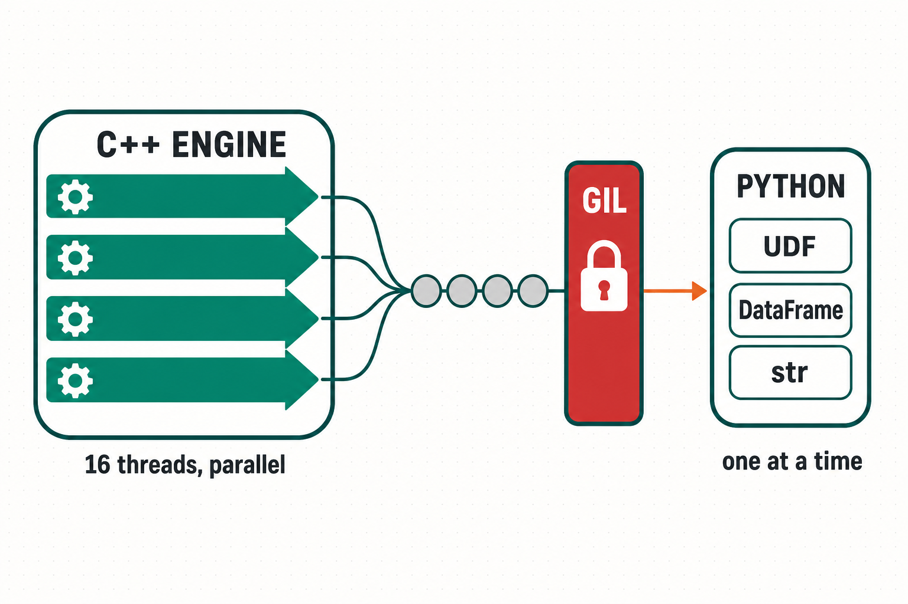
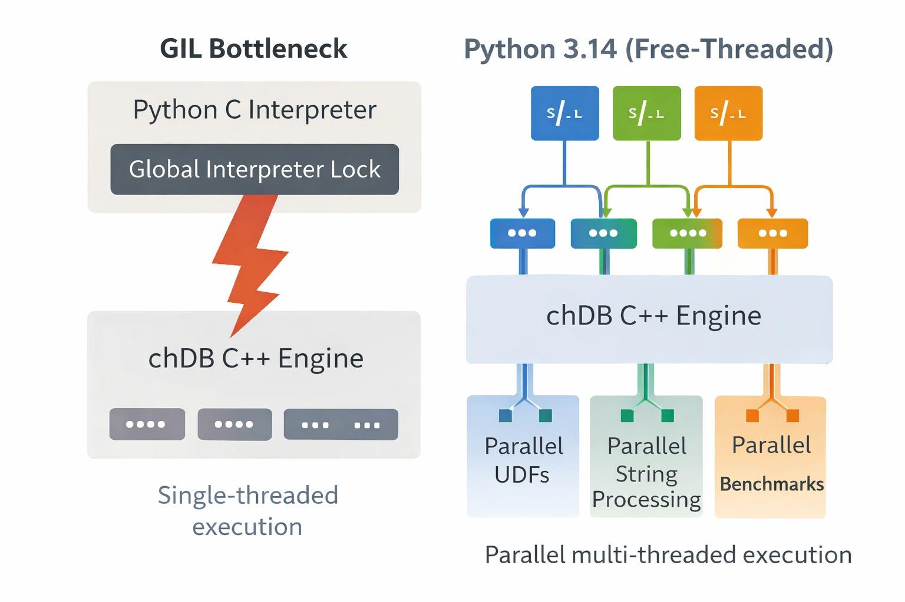
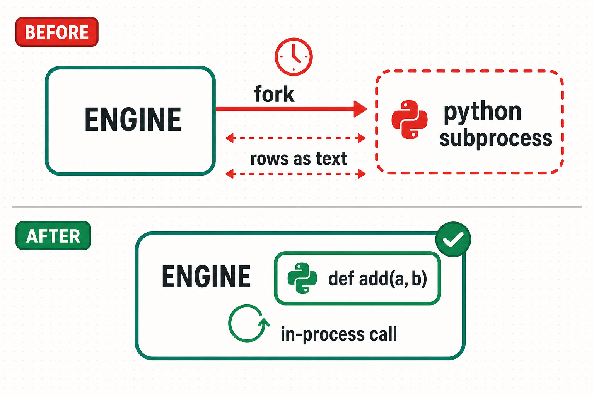
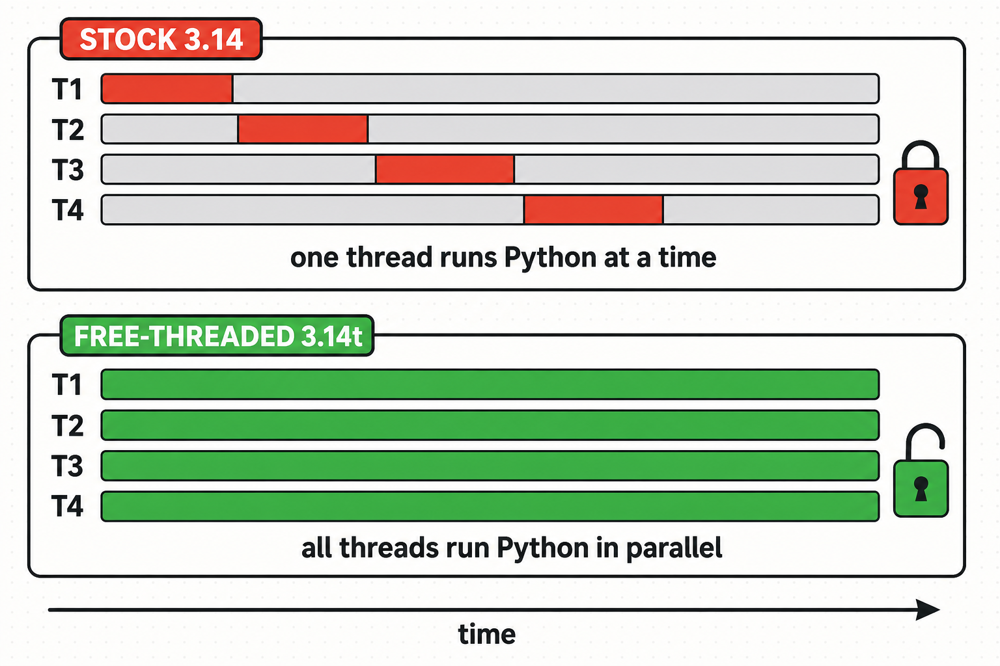
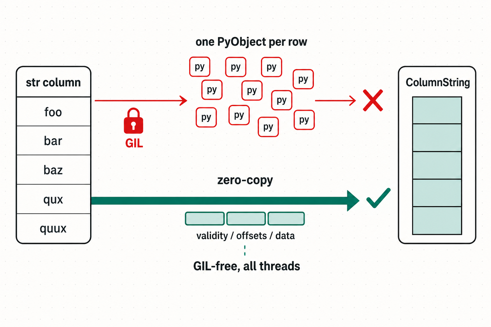

No GIL,
Real Gains
Porting a C++ Python extension to free-threaded Python 3.14.
Auxten Wang · Technical Director @ ClickHouse · Creator of chDB
PyData PyCon Yerevan · 24 Jul 2026
zero subprocesses

Auxten Wang
@auxten · auxten.com
Killing the GIL: 30 years of attempts
Free-threading patch
Greg Stein removed the GIL from Python 1.4 with fine-grained locks.
✗ ~2× slower single-threaded — shelved. (PyThreadState survived!)
python-safethread
Adam Olsen: objects owned per-thread, restricted sharing between threads.
✗ Too restrictive — faded away.
Gilectomy
Larry Hastings, fine-grained locking again. Refcounts thrashed CPU caches.
✗ Single-thread perf collapsed — abandoned.
nogil fork
Sam Gross: biased refcounting, immortal objects, mimalloc.
✓ Single-thread cost finally small → became PEP 703.
The one that landed: free-threaded Python
PEP 703 · 3.13
The GIL becomes optional. Experimental build, ~40% single-thread penalty.
PEP 779 · 3.14
Officially supported. Specializing interpreter enabled; penalty down to ~5–10%.
Opt-in build
A separate binary: python3.14t. Wheels get a t suffix: cp314t.
$ python3.14t -c "import sys; print(sys._is_gil_enabled())"
False # threads now run Python bytecode in parallelWhy it matters: Python finally spans the cores
Single-core speed plateaued years ago — machines got wider instead. Free-threading lets one Python process use the width.
Agent builders
Parallel tool calls & subagents in one process — threads share models, caches, vector indexes. No pickle, no IPC.
Desktop apps
Responsive UI thread + truly parallel background work. No multiprocessing spawn/pickle/packaging pain.
Servers & data tools
Thread-per-request finally uses all cores. One copy of the model — not 16 workers × 16 copies.
Extensions get nothing for free
$ python3.14t -c "import _chdb"
RuntimeWarning: The global interpreter lock (GIL) has been enabled to load
module '_chdb', which has not declared that it can run safely without the GIL.So who has opted in? (July 2026)
of the top 360 compiled packages on PyPI now ship free-threaded wheels
219 / 360 · hugovk.dev/free-threaded-wheels · 15 Jul 2026
The scientific stack led the way. Chances are your daily imports already run free-threaded:
…and who hasn't (yet)
Our patient — chDB: a rocket engine on a bicycle
The ClickHouse engine, embedded in your Python process — SQLite-simple, built to scan millions of rows.
# pip install chdb
import chdb
chdb.query("SELECT count() FROM file('hits.parquet')")
It drops into your Python data stack
70+ formats
Parquet, CSV, JSON, Arrow, ORC — read & write, no converters.
Zero-copy Pandas / Arrow
Query a live DataFrame in place: SELECT … FROM Python(df)
Python UDFs
Your Python functions callable from SQL — keep this one in mind too.
Parallel engine × serial glue = serial query
The C++ engine releases the GIL and scales fine — but every stream queues on it to touch anything Python.

Three changes that made no-GIL pay off
Move Python UDF execution in-process
Kill the subprocess pipeline first.
Declare the module GIL-independent
Py_mod_gil_not_used — then survive the audit it implies.
Drop to low-level CPython string access
On hot paths, the friendly Unicode APIs had to go.

Plus the honest part: what broke, what didn't scale, and where the stable ABI stopped being an option.
UDFs ran out of process
The old decorator wrote a script + XML config; the engine forked Python and piped rows through it as text.

After: native in-process UDFs
C++ holds your py::function and calls it from the engine pipeline. Typed args, zero subprocesses.
import chdb
from chdb.sqltypes import INT64
@chdb.func([INT64, INT64], INT64) # in-process
def add(a, b):
return a + b
chdb.query("SELECT add(x, y) FROM t")// C++: PythonScalarUDF::executeImpl
// (called from engine worker threads)
py::gil_scoped_acquire acquire; // <-- THE lock
for (size_t row = 0; row < rows; ++row)
{
py::tuple py_args = box_arguments(row);
py::object out = func(*py_args); // your fn
insert_into_column(result, out);
}This is what no-GIL was made for

Opting in: one line — and an audit
PYBIND11_MODULE(_chdb, m, py::mod_gil_not_used()) // that's the whole declarationThe line is easy. It's a claim about every global in your codebase — so the real work was a state audit:
The nastiest bug: lazy init on a GIL-free thread
Trigger
First NULL in a string column → a scan thread lazily imports pandas.NaT… with no Python thread state.
Crash
Segfault deep inside the allocator — nowhere near the actual bug.
Hang
Then the fatal-signal handler deadlocks. No traceback, no exit. The query just hangs, forever.
Strings are the hot path — go straight to the bytes
Analytics = millions of strings crossing the C++/Python border per query. The friendly Unicode APIs cost a function call per value — so on 3.14t we read CPython's memory directly:
if (PyUnicode_IS_COMPACT_ASCII(obj)) { // most analytical data
data = (const char *) PyUnicode_1BYTE_DATA(obj); // direct pointer, no copy
len = PyUnicode_GET_LENGTH(obj);
}
// ...cached-UTF8 / compact / legacy fallbacks omittedThe biggest win: skip PyObject entirely
pandas 3.x str columns are Arrow-backed: plain C buffers, scanned directly on all streams — no GIL at all.

ClickBench, 50M-row hits DataFrame, all queries, pandas 3.x, hot run · 10.9× total · geomean 4.5× · string-heavy up to 64×
What broke, what surprised us
Numbers from a 16-core machine DRAFT
Shipped & measured
To re-run for this talk TODO
Striped bar = placeholder — final scaling curve to be measured on the 16-core box before the talk.
When does no-GIL actually help?
It pays when…
It doesn't when…
Own an extension? The 60-second version
For the few of you maintaining a C/C++/Rust extension — photograph this slide:
Three takeaways
No-GIL is opt-in, and the opt-in is an audit.
The declaration is one line; the promise covers every global you own.
Restructure before you parallelize.
In-process beats out-of-process; zero-copy beats lock-free; then free-threading multiplies what's left.
The GIL was an amnesty, not a feature.
3.14t revokes it. The bugs it exposes were already yours.
Try it on your own extension
pip install chdb # try the engine
python3.14t your_tests.py # try the futureCode & slides
github.com/chdb-io/chdb
auxten.com · @auxten
Read more
py-free-threading.github.io
PEP 703 · PEP 779 · chDB docs: clickhouse.com/docs/chdb
Now it's our extensions' turn.
Q&A
github.com/chdb-io/chdb · auxten.com
No GIL, real gains — thank you, Yerevan!